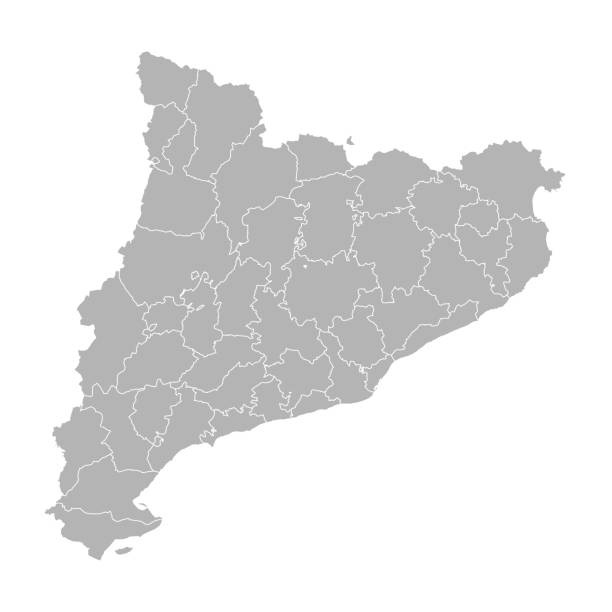

El objeto nos permite obtener infroamción sobre el evento que se acaba de producir
Podemos consultar el objeto evento para saber en que coordenadas X,Y ha hecho clic el usuario. También podemos saber si, por ejemplo, mantenía pulsada la tecla Ctrl en el momento de hacer clic.
Mediante la captura del evento keyup podemos conocer que tecla ha puslado el usuario
Una propiedad del objeto event muy interesante es la propiedad target. Nos permite conocer cuál es el elemento que ha sido clicado